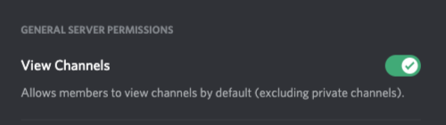
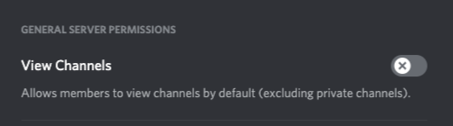
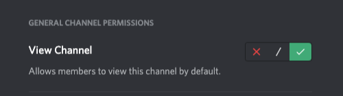

Recommended Installation Instructions
It is why you are here right?
1. Secure Your Server
You shouldn't install ANY Discord bots until you have taken the time to evaluate the risks associated
with it. Bots are treated the same as your friends so they can read EVERY message posted in any channel
that they are in. Bots can easily accidentally also be given permissions
that allow them to take over your server so think about how much you trust them.
Optional
If you are running a public server and expect new regular users you will want to install a bot that supports autoroles.
I think that Yui is great for autoroles and works even if you give it minimum "Manage Roles" permissions.
Create a role for humans/users/etc or reuse a role that you have for actual people. Grant that role the ability to
"View Channels."

Edit the role for @everyone and remove the ability to "View Channels."

If the rest of your roles are set to defaults every channel is now a robot free zone. This is good.
2. Create a Channel
You don't want the bot to interrupt actual conversations so give it it's own channel to live in. Call
the channel something like #letterboxd-feed or #diary-feed.
3. Authorize the Bot
4. Put the Bot to Work
Add the bot to the new channel and make sure it has the ability to "View Channel"

Commands
- !help
- Display a help message. ex: !help
- !follow
- Subscribe Letterboxd user(s) in this channel. ex: !follow slim protolexus r0gue
- !unfollow
- Unsubscribe Letterboxd user(s) in this channel. ex: !unfollow slim protolexus r0gue
- !refresh
-
Force refresh of Letterboxd user(s) display name and profile photo.
ex: !refresh slim protolexus r0gue
- !following
- List all users subscribed in this channel. ex: !following
F.A.Q.
- How quickly should I see new diary entries post in my channel?
-
It should be somewhere between 20-60 minutes. If you haven't seen it post in 2 hours, something is probably wrong.
- What permissions does this bot need?
-
"View Channel," "Send Messages," and "Embed Links" are the only permissions this bot needs. "View Channel" gives it
the ability to read your follow/unfollow commands. "Send Messages" with "Embed Links" gives it the ability to post
your diary entries in a format that isn't just a text blob.
- Should I really be concerned about what bots I run?
-
Yes! A bot that is running in a channel can record every message (including photos and videos)
posted there.
- Where do I go for help?
- Join the Filmlinkd Discord. The link is in the header.
- How can I support your work?
- Join the Filmlinkd Patreon. The link is in the header.